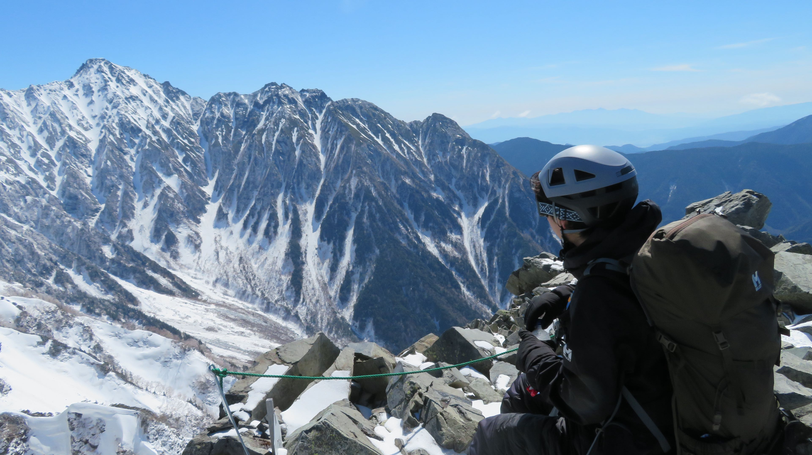
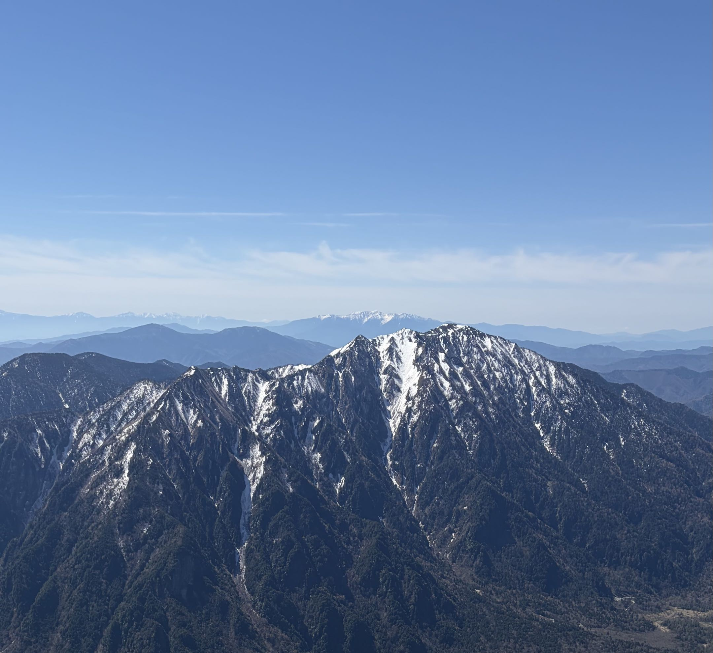
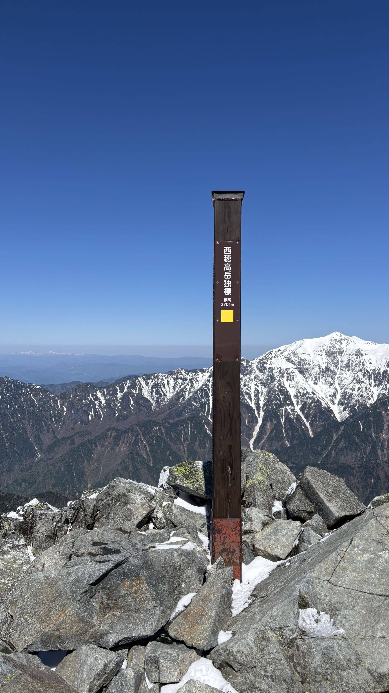

| 日程 | 2026年5月4日（スタート）〜 5月5日（登頂） |
|---|---|
| メンバー | ソロ（なし） |
| 難易度（俺流10段階） | 技術力：3 / 体力度：2 |
| アクセス＆タイム |
・高山駅 → 新穂高ロープウェイ（バス 約1時間半） ・新穂高口駅 → 西穂山荘：徒歩 約1時間 ・西穂山荘 → 西穂独標：徒歩 約2時間 |
残雪期の北アルプスに対応するため、しっかりとした冬用フットウェアとギアを装備して挑みました。

GWの混雑や残雪状況を確認しつつ、西穂山荘を経て西穂独標を目指しました。現地で感じたコンディションは以下の通りです。

今回の山行では、西穂独標までは到達したものの、その先の「西穂高岳本峰」まで足を伸ばせなかったことが非常に悔しく、つらい決断となりました。
岩と雪のミックス状態という絶妙すぎる残雪状況の中、「このままアイゼンを付けたまま登り続けるべきか否か」を冷静に判断した結果、安全を最優先にして撤退を選択しました。山頂へ届かなかった悔しさは残りますが、無事に下山できたことこそが次へのステップです。またコンディションの良い時期に、必ず西穂高岳の完全登頂を目指してリベンジします！
← HOMEへ戻る